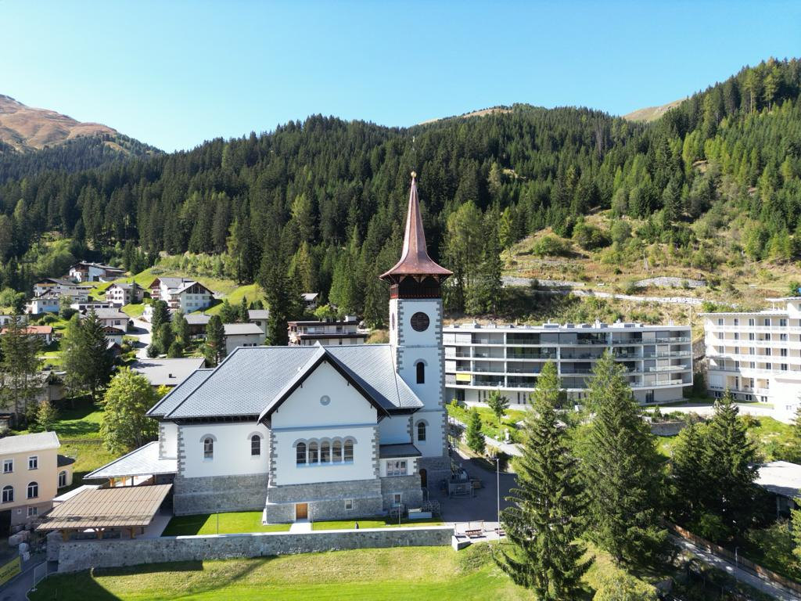
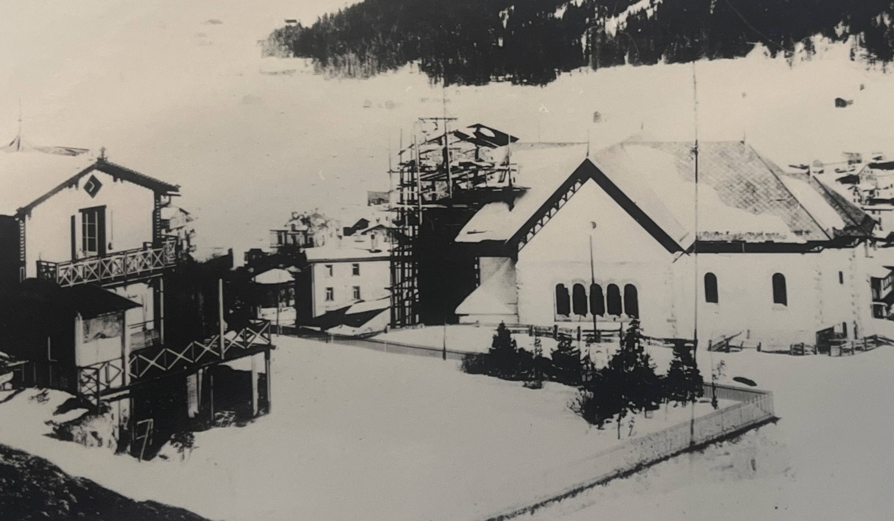

Die Baugeschichte der Marienkirche von Davos wäre schnell erzählt, nicht aber ihre bewegte Vorgeschichte. Ab Mitte des 19. Jahrhunderts hat sich im beschaulichen Landwassertal viel verändert.
Marienkirche Davos Platz, nach vollständiger Aussenrenovation, 2023. (Bild: zvg katholische Pfarrei Davos)
Im bischöflichen Archiv von Chur wird Davos 1160 erstmals erwähnt. Die
Walser siedelten sich im 13. Jahrhundert an und die typischen
Streusiedlungen prägen bis heute Teile des Landschaftsbildes. Bereits im
14. Jahrhundert werden drei Kirchen in einem Ablassbrief urkundlich
genannt. 1528 wurde an Ostern, mit Einführung der Reformation, die Messe
in Davos abgeschafft. Trotz der österreichischen Besatzung im 17.
Jahrhundert und dem Einsatz süddeutscher Kapuzinermönche mit Fidelis von
Sigmaringen, kehrte der Katholizismus für nur vier kurze Jahre zurück.
Mit dem Einmarsch der französischen Armee blieb die Gegenreformation
aber erfolglos und in Davos war der Protestantismus für eine lange Zeit
vorherrschend.
Im Jahre 1870 zählte man in Davos 1914 ortsansässige Protestanten und 68
Katholiken. Die kleine römisch-katholische Gemeinde wurde von der
Pfarrei Schmitten (GR) mitbetreut. Dies bedeutete für den Pfarrer einen
Fussmarsch von sechs Stunden.
Die Kehrtwende – Davos wird zum Kurort
1853 kam die grosse Kehrtwende für das Landwassertal. Der deutsche Arzt Alexander Spengler (1827–1901) floh als politisch Verfolgter nach Davos und liess sich als Landschaftsarzt nieder. Er erkannte schnell die heilende Wirkung des Bergklimas für Tuberkulose-Erkrankte. Im Jahre 1868 errichtete er zusammen mit Willem Jan Holsboer (1834–1898) die erste Kuranstalt. Im selben Jahr kam Domvikar Joseph Dienst aus Bautzen (D) und er las erstmals wieder regelmässig Messen im Landwassertal. Die touristische Erfolgsgeschichte von Davos und die damit einhergehende Rückkehr des Katholizismus nahmen von da an ihren unaufhaltsamen Lauf. 1888 wurde die Schmalspurbahn Landquart-Davos AG (heute Rhätische Bahn / RhB) gegründet und die ersten Dampfzüge kamen 1890 nach Davos und mit ihnen begann eine neue Ära. Sanatorien, Hotels und Pensionen schossen wie Pilze aus dem Boden. Die berühmte Schatzalp wurde eröffnet und von Thomas Mann (1875–1955) in seinem Roman «Der Zauberberg» verewigt. Bis 1918 entstanden insgesamt 38 Sanatorien und die Grandhotels lockten eine betuchte und illustre Klientel in die beschauliche Bergwelt. Zusammen mit dieser rasanten Entwicklung kamen bereits Ende des 19. Jahrhunderts mehrere Hundert, vorwiegend katholische Gastarbeiter nach Davos und auch die Zahl an katholischen Patienten und Gästen nahm stetig zu. Dazu ist in einem Leserbrief im Wochenblatt für die Landschaft Davos vom 8. Februar 1888 zu lesen: «Mit diesen fremden Gästen sind auch mehrere Katholiken hier eingezogen und bei uns verblieben. Als nun katholische Kurgäste zahlreicher hier eintrafen, als die Hoteliers mit Vorliebe katholische Dienstboten in ihre Häuser aufnahmen, und als endlich 200 bis 300 italienische Arbeiter während des Sommers hier sich ansiedelten – wurde die Errichtung einer katholischen Kirche eine absolute Notwendigkeit.»
Die römisch-katholische Gemeinde wächst
Die Nachfrage und das Angebot an katholischen Gottesdiensten waren 20
Jahre nach Spenglers Ankunft gross. Die Katholiken durften zeitweise die
reformierte Kirche St. Johann nutzen. Die Pfarrpersonen wechselten
ebenso wie die Örtlichkeiten, an denen die Messen gefeiert wurden. Diese
fanden im Hotel Rhätia, oder mit bischöflicher Erlaubnis im Damensalon
des Hotels Schweizerhof, statt. Die damalige Hotelière spendierte den
Messwein und die Schmittner liehen ihre Paramente aus. Wie behelfsmässig
die römisch-katholische Gemeinde damals aufgestellt war, beschreibt
Pfarrer Lenz in einem Brief zum Fest Maria Himmelfahrt, 1874: «Beim
Anlass des hohen Festes entlehnte ich von der Besitzerin des
Schweizerhofes, Frau Gelpke-Stahl, mehrere Sachen, als Teppiche, Tücher,
Blumen und Leuchter, zur Verschönerung des Festes. Der geringe Schmuck
tröstete in etwa das katholische Herz.»
Das Bedürfnis nach einer eigenen Kirche wuchs, die Zahl der
ortsansässigen Katholiken stieg stetig an. Der elsässische Abbé Hubert
Burg (1847–1825) kam 1875 nach Davos und trieb das Bauvorhaben
beharrlich voran. An der heutigen Oberen Strasse wurde dann,
hauptsächlich finanziert von Spenden auswärtiger Gäste, die Kapelle
«Maria zum Schnee» errichtet und im Jahre 1879 eingesegnet.
Zeichnung der Kapelle «Maria zum Schnee» von 1879. (Bild: zvg Archiv katholische Pfarrei Davos)
Nur ein Jahr später zählte man bereits 565 ortsansässige Katholiken, wovon 170 ihre Osterpflicht (Empfang der Heiligen Kommunion, mindestens einmal im Jahr) erfüllt hatten und neun Kinder zum Religionsunterricht angemeldet waren. Es war die Amtszeit des ersten Missionspfarrers Dr. Johann Stössel Vereine und ein Fremdenkomitée wurden gegründet und erste Pläne zur Errichtung einer katholischen Schule entstanden. Aber es waren schwierige Zeiten. Denn es gab hitzige Auseinandersetzungen zwischen den einheimischen Protestanten und den noch fremden Katholiken. Pfarrer Stössel hatte wahrscheinlich ein schwieriges Verhältnis zu den Behörden und die Streitigkeiten fanden ihren Höhepunkt, als 1883 ein Katholik eine Andersgläubige heiraten wollte und der Geistliche seine Bedenken in einem Brief zum Ausdruck brachte. Es folgten emotionale Leserbriefdebatten im hiesigen Wochenblatt und ein Schreiber forderte nachdrücklich, dass es die hohe Pflicht der Behörden sei, diesem intoleranten Pfarrer die Niederlassung zu entziehen, da er die Glaubensansichten der reformierten «Einheimischen» nicht toleriere. Es wird von dramatischen Szenen berichtet. So musste der Pfarrer an einem Sonntag um 10 Uhr zur Feuerwehrübung einrücken, man liest von nächtlichen Belagerungen und zerbrochenen Scheiben des katholischen Pfarrhauses und schliesslich von einem Pfarrer, der nach Schmitten fliehen musste. Erst mit Pfarrer Wipfli (1844–1910), der 1885 nach Davos gesandt wurde, kehrte wieder mehr Ruhe ein. 1887 kamen die ersten Klosterschwestern aus Ilanz, um sich der Pflege katholischer Patienten in den Sanatorien anzunehmen. Die Zahl der Katholiken hatte sich mittlerweile verdreifacht, die katholische Schule entstand und immer mehr Nonnen kamen nach Davos.
Bau der Marienkirche
Schon bald bot die kleine Kapelle nicht mehr genug Platz. Um den Bau einer neuen, grösseren Kirche zu finanzieren, zeigte sich das Fremdenkomitée damals sehr einfallsreich beim Beschaffen des nötigen Kapitals. Um Spenden zu sammeln, wurden zahlreiche Bazare und Bälle organisiert. Im Jahr 1890 kam dann Pfarrer Florin Crapp (1856–1902) aus Alvaneu nach Davos. Der umtriebige Geistliche trieb den Bau einer neuen Kirche energisch voran, allerdings nicht ganz ohne Widerstand. Erst nach einigem Hin und Her konnte 1892 das Baugrundstück, ganz in der Nähe der Kapelle, gekauft werden. Die Grundsteinlegung für das neue Gotteshaus erfolgte im selben Jahr und wurde in zwei Jahren Bauzeit fertiggestellt. Der Turm hatte anfangs nur die Höhe des Chorraums.
Fotografie der Marienkirche aus dem Jahr 1894. (Bild: zvg katholische Pfarrei Davos)
Der imposante Hochaltar wurde 1894 gestiftet und 1896 kamen die beiden
Seitenaltäre dazu. Die mehrheitlich gespendeten Stühle wurden für fünf
Franken pro Saison an die Kurgäste vermietet. Der Kircheninnenraum und
der Turm wurden dann Schritt für Schritt fertiggestellt. 1931 wurde die
Kirche, nach Abzahlung aller Schulden, konsekriert.
Nach Fertigstellung der Marienkirche wurde die erste Kapelle von
einheimischen Familien gekauft und unter anderem an die
russisch-orthodoxe und griechische Gemeinde vermietet. Zeitweise diente
sie als Remise für einen Metzger und wurde letztlich abgerissen. Heute
steht auf dem Gebiet das Alterszentrum Guggerbach. Eine kleine
Steinsäule im Speisesaal erinnert noch heute an die Anfänge der
römisch-katholischen Kirchgemeinde.
Innenraum der Marienkirche, Aufnahme 2023. (Bild: zvg Archiv katholische Pfarrei Davos)
Veränderungen und Beständigkeit
Noch während des zweiten Weltkriegs hatten die Sanatorien Hochkonjunktur. Als aber in den 1950er Jahren neue Behandlungsmethoden aufkamen, verschwanden die meisten Kliniken fast so schnell wieder, wie sie entstanden waren. Viel hat sich in Davos seither verändert. Der Luftkurort hat sich zu einem mondänen Tourismusort entwickelt und ist heute die höchstgelegene Stadt der Alpen. Aber der Katholizismus ist geblieben. Beinahe wäre die Marienkirche in den 1970er Jahren abgerissen worden, die Nonnen zogen weg und die katholische Schule ist schon lange Geschichte. Rund 3900 Katholiken leben und arbeiten heute in Davos. Die Marienkirche wurde in den letzten Jahren aufwendig saniert und ihr imposantes Sieben-Glocken-Geläut ist im ganzen Tal zu hören und macht auf diesen theologisch bedeutsamen Ort aufmerksam. 100 Jahre nach Ernennung zur Kirchgemeinde trotzt die innovative Pfarrei den Widrigkeiten dieser Zeit und ist aus dem Landwassertal nicht mehr wegzudenken. Auch ein ökumenisches Miteinander ist in Davos heute selbstverständlich geworden.
Petra Homberger ist Studentin im Bischöflichen Studienprogramm an der Theologischen Hochschule Chur und Katechetin der römisch-katholischen Pfarrei Davos.
Weitere Artikel von {{ author.author }} finden Sie hier:
Die Bilder dürfen mit Genehmigung der katholischen Pfarrei Davos veröffentlicht werden.
Zur Vertiefung:
- Hoch, Markus: Marienkirche Davos, Entwicklung einer Kirchgemeinde, 1985, Dokumentationsbibliothek Davos und Archiv kath. Pfarrei Davos.
- Scherer-Boccard, Gf. Theodor: Wiedereinführung des katholischen Kultus in der protestantischen Schweiz im 19. Jahrhundert, Ingenbohl 1881.
- Archiv: Davoser Wochenblätter 1979-1894, Dokumentationsbibliothek Davos.
- textb4link (Leerzeichen am Schluss) text